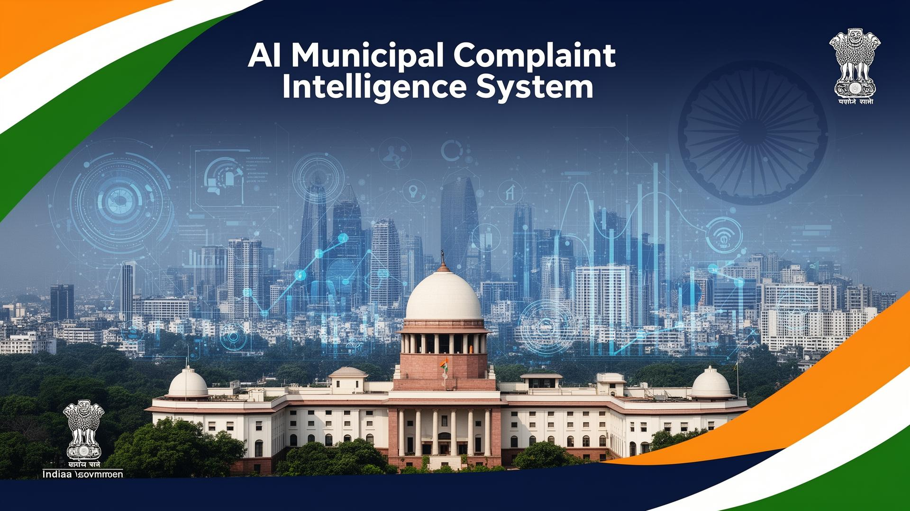

Real-time AI-powered complaint prioritization, severity scoring, credibility assessment, and city-level governance intelligence for urban municipal authorities across India.
NagarAI is not a complaint portal. It is an AI Municipal Decision Intelligence Platform — the first system in India to automatically convert unstructured citizen text into structured, prioritized, explainable, actionable intelligence for city officers.
Every complaint that enters NagarAI is scored for severity, assessed for credibility, deduplicated, routed to the right department, and delivered to officers with a specific recommendation — all in under one second.
Four specialized AI engines working in concert to deliver real-time municipal intelligence
Advanced NLP keyword detection engine that identifies safety-critical complaints and triggers emergency overrides in real time. Evaluates severity across 25 emergency keywords, 21 high-severity signals, and 15 medium-severity patterns.
Multi-signal credibility scoring engine that detects spam, assesses text depth, verifies location mentions, and identifies duplicate complaints using TF-IDF cosine similarity with 0.80 threshold detection.
Weighted priority orchestration system combining severity and credibility scores with adaptive emergency mode. Calculates SLA deadlines, enforces escalation paths, and supports dynamic weight recalibration for disaster scenarios.
Ward-level risk analysis and city-wide governance intelligence engine. Detects complaint spikes, computes ward risk scores, generates resource deployment plans, and provides a real-time City Transparency Score for public accountability.
Three-step intelligent complaint processing pipeline
A citizen files a complaint through the portal with description, category, and location. The AI pipeline activates immediately upon submission — no delays, no manual sorting.
Four ML models simultaneously assess severity (0–10), credibility (0–10), detect duplicates, classify emergency priority, compute the weighted priority score, and generate a department-specific action recommendation.
The officer dashboard surfaces CRITICAL complaints instantly with AI recommendations, department assignments, SLA countdowns, and city-level deployment plans — enabling data-driven decisions in seconds.
File a complaint as a citizen or explore the officer command dashboard